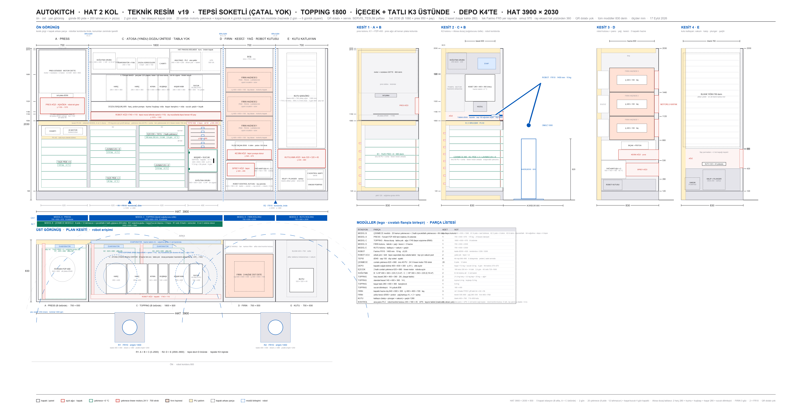

Hattın tamamı tek modelde. Üstüne gel — adı çıkar. Çift tıkla — o istasyonun kendi modeli açılır. Modelin altındaki çubuktan kesit alabilir (X/Y/Z) ve iki noktaya tıklayıp ölçü çıkarabilirsin.
sürükle: döndür · tekerlek: yakınlaştır · üstüne gel: istasyon · çift tıkla: aç · alttan kesit + ölçü
1 · Ne yapar
Makine = dört modül + iki sabit kobot. Tabanda tek çekmece modülü (2500 mm); PRESS ve TOPPING onun üstüne oturur. Bir pide için sıra: ÇEKMECE (hamur) → PRESS (açma) → TOPPING (kasetlerden dozaj) → OVEN (yağ, pişirme, kesme) → PACK (kutu) → teslim dolabı. Ürün tepsisiz akar, tabanını robot tutar.
İki kobot yerinde sabit durur (ray yok); her modülün robot açıklığı o an açılır, soğuk kabinler kapalı kalır.
Uç değiştirici: PENÇE (hamur, kutu, içecek) ve pide tabanını tutan el. Kaseti robot taşımaz — eleman önden çeker.
Kapasite için HAT SEÇENEKLERİ sayfasındaki sim sonuçları geçerlidir (seçeneğe göre 26–58 ürün/saat).
2 · Özellikler
Modül standardıhepsi 830 derin, hat yüksekliği 2030. A PRESS 700 · B ÇEKMECELER 2500 (yük. 1060) · C TOPPING 1800 (B üstünde, 1060–2030) · D FIRIN 700 · E KUTULAMA 700Toplam hat3900 × 830 × 2030 mm. RAY YOK: iki kobot hattın önünde sabit (x 1250 ve 3200), erişimleri ortadaki aktarma rafında kesişirRobot2 × Fairino FR10 (erişim 1400). FR5 (922) yetmiyor: R1 bölgesi 2200 mm geniş. Kaide 820, omuz 1000Ölçü kaynağıHAT v19 teknik resmi. Model paftadan OKUYOR — ölçü iki ayrı yerde yazılmıyorÜretim çıktısıHAT_v2_YERLESIM.step — SolidWorks'te montaj olarak açılır, her birim adıyla ayrı katıKontrolüreteç çalışırken: hiçbir birim hat zarfını aşamaz · kaset yuvaları çakışamaz · gerçek modellerin zarfı paftayla tutmalı
3 · Teknik resim

HAT v19 — geçerli genel yerleşim paftası
4 · Sürüm geçmişi
HAT v19 (18 Eyl) · GEÇERLİ: 2 kol, ray yok, hat 3900; çekmeceler tabanda tek modül, PRESS + TOPPING üstünde; fırın 3 hazne; TOPPING 6 kaset yuvası
HAT v14–v18: 2 kol seçeneği, tabla/bant karşılaştırması, aktarma gözü (iptal)
HAT v51 (6 Eyl): PACK v4 — eski 4200 mm'lik tepsili hat
AUTOKITCH · HAT · Yol C canlı tasarım defteri · model: arastirma/_uretec/hat_montaj_v2.py · 22 Eyl 2026